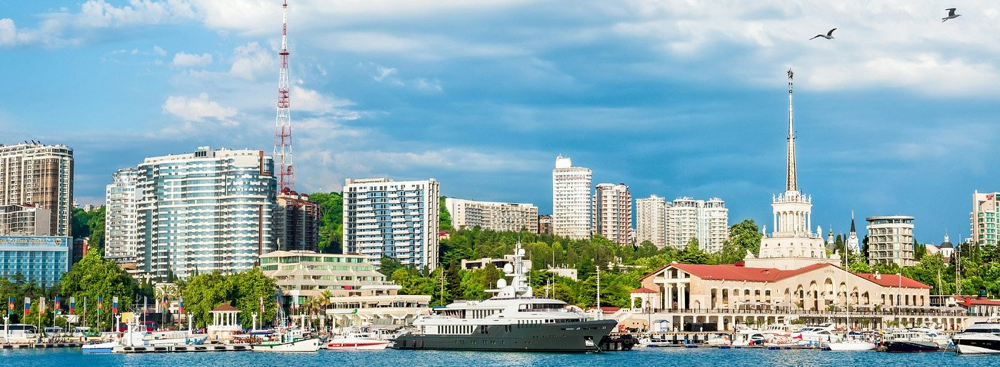
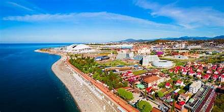
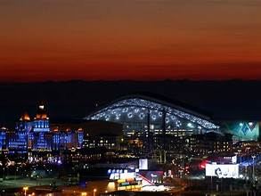
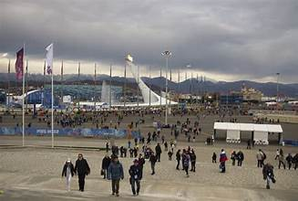
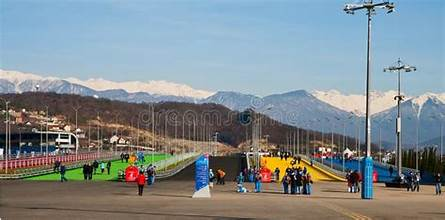

Sochi is Russia's premier resort city, stretching 145 kilometers along the northeastern coast of the Black Sea with the snow-capped peaks of the Caucasus Mountains rising just behind. Often called the "Russian Riviera," it enjoys a subtropical climate unique in Russia, offering warm beaches in summer and world-class skiing in winter — a rare combination found in few places on Earth.
Sochi's global profile soared when it hosted the 2014 Winter Olympics, the most expensive Games in history at an estimated cost of over $50 billion. The Olympic Park on the coast hosted ice sports while the Rosa Khutor mountain resort in nearby Krasnaya Polyana hosted Alpine skiing, ski jumping, and other snow events. The legacy infrastructure — stadiums, transport links, hotels, and ski facilities — transformed Sochi into a world-class destination.
The Krasnaya Polyana area, just 40 km from the coast, hosts several major ski resorts including Rosa Khutor, Gorky Gorod, and Gazprom Mountain Resort. Together they offer over 100 km of groomed pistes ranging from gentle beginner slopes to expert off-piste terrain. The gondola systems connect sea-level Sochi with elevations exceeding 2,300 meters, giving skiers dramatic views of the Black Sea from mountain peaks.
Beyond winter sports, Sochi offers subtropical botanical gardens, long pebble beaches, thermal spas, and boat excursions along the coastline. The city's proximity to Abkhazia, the Caucasus nature reserves, and the dramatic Akhshtyrskaya cave system make it a base for diverse outdoor adventures. The Sochi National Park, one of Russia's oldest, protects dense forests and mountain ecosystems immediately behind the city.


